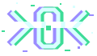

one identity
Mailbox, login and file owner are the same object. Nothing to synchronise; leaving ends access everywhere in one step.
~$ kernoid --about
kernoid is one self-hostable system for an organisation's core: an account is created once and is at the same time the mailbox, the login for single sign-on and the owner of files. Free software in Rust – everything included.

Good free software exists for mail, for identity and for files – but as separate systems, each with its own users, its own administration and its own operations. kernoid is one system for all three.
Mailbox, login and file owner are the same object. Nothing to synchronise; leaving ends access everywhere in one step.
Users, groups, domains, roles and policies in one place – one interface, one API.
One container image on Docker or Kubernetes. It needs PostgreSQL and S3-compatible storage – nothing else.
Single sign-on, provisioning, multi-tenancy, clustering: one edition, free for everyone. No telemetry.
SMTP, IMAP, JMAP, CalDAV, CardDAV, WebDAV; OpenID Connect, OAuth 2.0, SAML 2.0, SCIM 2.0, LDAP. The same protocols take your data out again.
kernoid takes over AGPL code from Stalwart and carries the concepts of Zitadel over to Rust – credited in every file.
Connections to other services – video, office editing and more – are modules: off by default, switched on where they are needed.
The server is AGPL-3.0; first-party apps are MIT and speak an open protocol. Anyone can write their own.
kernoid is at its beginning – there is nothing to install yet. The order is fixed, the windows are rough.
Counted from the start of funded development, with two to three full-time developers. Details in the whitepaper.
Rust, identity and mail protocols, distributed systems, apps, operation. Contributions under the DCO.
Test the alpha and the beta, fund the development, or run kernoid for your customers.
Questions and corrections are welcome as issues or pull requests in kernoid/whitepaper.
Write to support@falkoss.org – kernoid is published by falkOSS.